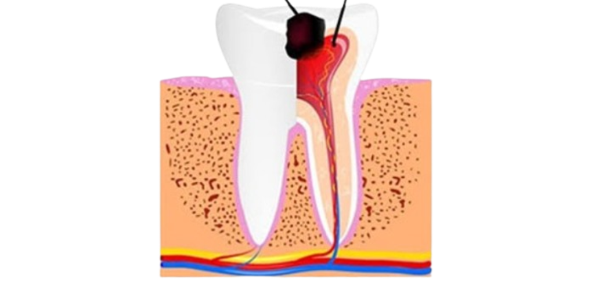
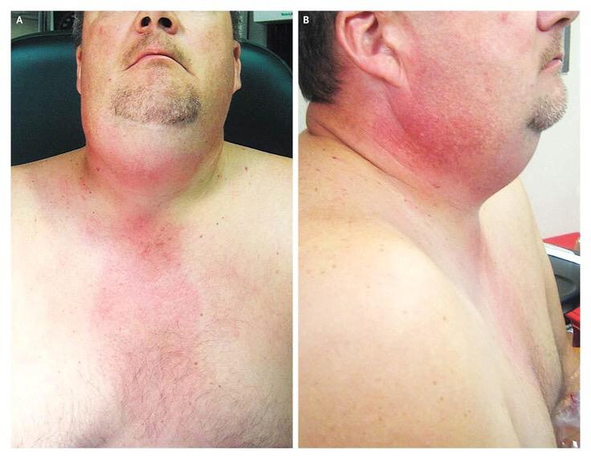
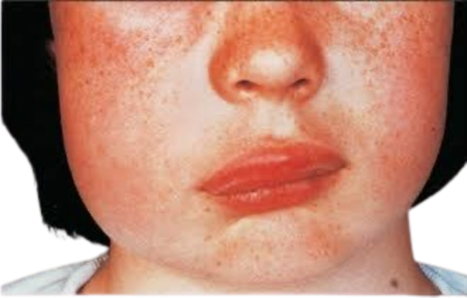

الأسئلة الشائعة عن تداعيات التهاب العصب
1)
ما هو التهاب العصب؟
التهاب العصب هو التهاب داخل عصب السن يحدث غالبًا بسبب تسوس عميق أو كسر في السن، ويسبب ألم شديد أو حساسية.

2)
هل التهاب العصب خطير؟
إذا تُرك بدون علاج، نعم… ممكن يسبب مشاكل أكبر مثل خراج أو ألم مستمر أو تكسير السن.

3)
ما هي تداعيات (مضاعفات) التهاب العصب؟
أشهر المضاعفات:
- موت العصب (Necrosis)
- خراج الأسنان (Dental abscess)
- انتشار العدوى للأنسجة المحيطة
- التهاب العظم (Osteomyelitis)
- تورّم الوجه أو الفك (cellulitis)
- التهاب الجيوب الأنفية العلوية في الأسنان الخلفية للفك العلوي (Sinusitis) ينتشر في الناحيتين من الرقبة ويسبب ضيق تنفس واختناق(Ludwig's angina) ينتشر لأعلى الوجه ويؤدي إلى جلطة في المخ ( cavernus sinus thrombosis)



4)
كيف أعرف إن التهاب العصب وصل لمرحلة خطيرة؟
علامات الخطورة:
- ألم نبضي قوي يزيد بالليل
- ورم في الوجه أو اللثة
- خروج صديد أو طعم سيئ
- ألم عند الضغط على السن
- حرارة أو تعب عام (في الحالات الشديدة)
5)
هل يمكن أن يشفى التهاب العصب لوحده؟
للأسف لا، العصب الملتهب لا يلتئم وحده، ويحتاج علاج عصب أو خلع حسب الحالة.
6)
ما هو الخراج وهل هو خطير؟
الخراج هو تجمع صديد بسبب انتشار الالتهاب.
لو لم يُعالج، ممكن ينتشر للوجه، الجيوب الأنفية أو حتى الدم.
7)
ما هو علاج التهاب العصب؟
أشهر العلاجات:
- علاج العصب (Root canal): تنظيف الأدوات وحشو القنوات
- مضادات حيوية (فقط إذا فيه خراج أو انتشار)
- أحيانًا خلع السن لو كان مكسور جدًا أو غير قابل للعلاج
8)
كيف أحمي نفسي من وصول الالتهاب لهذه المرحلة؟
- علاج التسوس مبكراً
- تنظيف الأسنان يومياً
- زيارات دورية لطبيب الأسنان
- علاج أي ألم أو حساسية بدري قبل ما تكبر
9)
هل علاج العصب مؤلم؟
لا، يتم تحت بنج موضعي. الألم يختفي بعد الجلسة غالبًا.
10)
هل التهاب العصب يؤثر على الصحة العامة؟
نعم لو امتد الالتهاب ممكن يسبب:
- انتشار العدوى
- ارتفاع حرارة
- صعوبة في الأكل
- مشاكل في الجيوب أو العظم